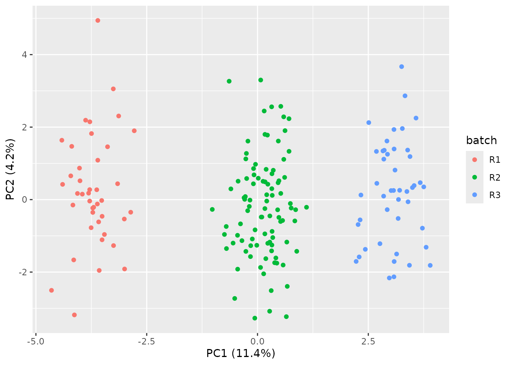
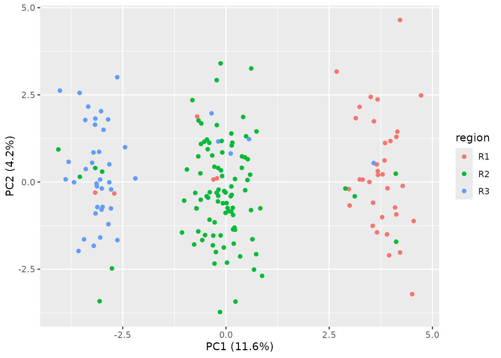

vignettes/case-study-confounder-audit.Rmd
case-study-confounder-audit.RmdThis is a synthetic-data walkthrough used to verify
design_audit() behavior on a deliberately confounded
cohort. It is a vignette, not a study. The narrative follows the
three-tier structure used across the case studies: a
naive analysis first, then rnaSentry standing
guard, then the counterfactual.
We build a cohort of 180 samples with two design variables that are almost interchangeable:
region is a 3-level factor derived by cutting a latent
normal variable;batch is a noisy copy of region
(80% of samples keep their region label; the rest are
shuffled).We also plant a real batch effect in expression: six genes are
multiplied by a batch-dependent factor. Finally, survival depends on the
latent variable (so region, and through its overlap
batch, are genuine survival correlates) – a realistic
setting in which an unadjusted screen can mistake batch-driven genes for
prognostic ones.
library(rnaSentry)
library(SummarizedExperiment)
#> Loading required package: MatrixGenerics
#> Loading required package: matrixStats
#>
#> Attaching package: 'MatrixGenerics'
#> The following objects are masked from 'package:matrixStats':
#>
#> colAlls, colAnyNAs, colAnys, colAvgsPerRowSet, colCollapse,
#> colCounts, colCummaxs, colCummins, colCumprods, colCumsums,
#> colDiffs, colIQRDiffs, colIQRs, colLogSumExps, colMadDiffs,
#> colMads, colMaxs, colMeans2, colMedians, colMins, colOrderStats,
#> colProds, colQuantiles, colRanges, colRanks, colSdDiffs, colSds,
#> colSums2, colTabulates, colVarDiffs, colVars, colWeightedMads,
#> colWeightedMeans, colWeightedMedians, colWeightedSds,
#> colWeightedVars, rowAlls, rowAnyNAs, rowAnys, rowAvgsPerColSet,
#> rowCollapse, rowCounts, rowCummaxs, rowCummins, rowCumprods,
#> rowCumsums, rowDiffs, rowIQRDiffs, rowIQRs, rowLogSumExps,
#> rowMadDiffs, rowMads, rowMaxs, rowMeans2, rowMedians, rowMins,
#> rowOrderStats, rowProds, rowQuantiles, rowRanges, rowRanks,
#> rowSdDiffs, rowSds, rowSums2, rowTabulates, rowVarDiffs, rowVars,
#> rowWeightedMads, rowWeightedMeans, rowWeightedMedians,
#> rowWeightedSds, rowWeightedVars
#> Loading required package: GenomicRanges
#> Loading required package: stats4
#> Loading required package: BiocGenerics
#> Loading required package: generics
#>
#> Attaching package: 'generics'
#> The following objects are masked from 'package:base':
#>
#> as.difftime, as.factor, as.ordered, intersect, is.element, setdiff,
#> setequal, union
#>
#> Attaching package: 'BiocGenerics'
#> The following objects are masked from 'package:stats':
#>
#> IQR, mad, sd, var, xtabs
#> The following objects are masked from 'package:base':
#>
#> anyDuplicated, aperm, append, as.data.frame, basename, cbind,
#> colnames, dirname, do.call, duplicated, eval, evalq, Filter, Find,
#> get, grep, grepl, is.unsorted, lapply, Map, mapply, match, mget,
#> order, paste, pmax, pmax.int, pmin, pmin.int, Position, rank,
#> rbind, Reduce, rownames, sapply, saveRDS, table, tapply, unique,
#> unsplit, which.max, which.min
#> Loading required package: S4Vectors
#>
#> Attaching package: 'S4Vectors'
#> The following object is masked from 'package:utils':
#>
#> findMatches
#> The following objects are masked from 'package:base':
#>
#> expand.grid, I, unname
#> Loading required package: IRanges
#> Loading required package: Seqinfo
#> Loading required package: Biobase
#> Welcome to Bioconductor
#>
#> Vignettes contain introductory material; view with
#> 'browseVignettes()'. To cite Bioconductor, see
#> 'citation("Biobase")', and for packages 'citation("pkgname")'.
#>
#> Attaching package: 'Biobase'
#> The following object is masked from 'package:MatrixGenerics':
#>
#> rowMedians
#> The following objects are masked from 'package:matrixStats':
#>
#> anyMissing, rowMedians
library(survival)
set.seed(12)
n <- 180
latent <- rnorm(n)
region <- factor(cut(latent, breaks = 3, labels = c("R1", "R2", "R3")))
batch <- as.character(region)
flip <- runif(n) < 0.2
batch[flip] <- sample(c("R1", "R2", "R3"), sum(flip), replace = TRUE)
batch <- factor(batch)
counts <- matrix(rpois(50 * n, lambda = 200), nrow = 50, ncol = n,
dimnames = list(paste0("g", seq_len(50)), paste0("S", seq_len(n))))
counts[1:6, ] <- counts[1:6, ] *
matrix(1 + 0.6 * as.integer(batch), nrow = 6, ncol = n, byrow = TRUE)
event_time <- rexp(n, rate = 0.05 * exp(0.8 * latent))
censor_time <- rexp(n, rate = 0.03)
cd <- S4Vectors::DataFrame(batch = batch, region = region,
time = pmin(event_time, censor_time),
event = as.integer(event_time < censor_time),
row.names = colnames(counts))
se <- SummarizedExperiment(assays = list(counts = counts), colData = cd)
se
#> class: SummarizedExperiment
#> dim: 50 180
#> metadata(0):
#> assays(1): counts
#> rownames(50): g1 g2 ... g49 g50
#> rowData names(0):
#> colnames(180): S1 S2 ... S179 S180
#> colData names(4): batch region time eventA naive analyst runs univariate Cox regressions for every gene against survival and takes the top hits – without checking whether the candidate genes are driven by batch, and without auditing the design.
lg <- log2(counts + 1)
stat <- do.call(rbind, lapply(rownames(lg), function(g) {
s <- summary(coxph(Surv(cd$time, cd$event) ~ lg[g, ]))
c(beta = s$coefficients[1, 1], p = s$coefficients[1, 5])
}))
rownames(stat) <- rownames(lg)
naive_top <- head(stat[order(stat[, "p"]), , drop = FALSE], 6)
data.frame(gene = rownames(naive_top),
planted_batch_effect = rownames(naive_top) %in% paste0("g", 1:6),
naive_top)
#> gene planted_batch_effect beta p
#> g4 g4 TRUE 1.873246 5.545756e-07
#> g6 g6 TRUE 1.861228 6.289526e-07
#> g5 g5 TRUE 1.554940 1.983573e-06
#> g3 g3 TRUE 1.635949 3.806189e-06
#> g2 g2 TRUE 1.564185 8.935056e-06
#> g1 g1 TRUE 1.453426 3.928363e-05The six genes whose expression we multiplied by the batch factor rank as the most “prognostic” genes in the cohort. An unguarded screen would put exactly these batch artifacts into a signature. A naive model that then includes both of the near-identical design variables compounds the problem by double-counting collinear terms:
summary(coxph(Surv(time, event) ~ batch + region, data = as.data.frame(cd)))
#> Call:
#> coxph(formula = Surv(time, event) ~ batch + region, data = as.data.frame(cd))
#>
#> n= 180, number of events= 104
#>
#> coef exp(coef) se(coef) z Pr(>|z|)
#> batchR2 0.0698 1.0723 0.5177 0.135 0.8928
#> batchR3 -0.6507 0.5217 0.4970 -1.309 0.1904
#> regionR2 1.4047 4.0744 0.5678 2.474 0.0134 *
#> regionR3 3.0286 20.6674 0.5620 5.389 7.09e-08 ***
#> ---
#> Signif. codes: 0 '***' 0.001 '**' 0.01 '*' 0.05 '.' 0.1 ' ' 1
#>
#> exp(coef) exp(-coef) lower .95 upper .95
#> batchR2 1.0723 0.93258 0.3887 2.958
#> batchR3 0.5217 1.91688 0.1970 1.382
#> regionR2 4.0744 0.24543 1.3390 12.398
#> regionR3 20.6674 0.04839 6.8693 62.181
#>
#> Concordance= 0.696 (se = 0.027 )
#> Likelihood ratio test= 57.1 on 4 df, p=1e-11
#> Wald test = 50.33 on 4 df, p=3e-10
#> Score (logrank) test = 60.84 on 4 df, p=2e-12batch and region carry almost the same
information; fitting both inflates standard errors and produces unstable
coefficients that look like two “independent” effects when there is
really one.
da <- design_audit(se, design_vars = c("batch", "region"),
redundant_effect_size = 0.5)
da$pairwise_table
#> var1 var2 type_pair test statistic df p_value
#> 1 batch region categorical x categorical chisq.test 224.5306 4 1.985583e-47
#> effect_size effect_size_type redundant
#> 1 0.7897444 cramers_v TRUEbatch and region are almost interchangeable
(Cramer’s V = 0.82), and the pair is flagged redundant.
Including both in a model would double-count nearly the same
information.
da$confounder_table
#> variable type n test statistic df p_value
#> 1 batch categorical 180 aov 2672.4828 2, 177 5.893067e-133
#> 2 region categorical 180 kruskal.test 93.2837 2 5.542458e-21
#> effect_size effect_size_type flagged adj_p
#> 1 0.9679462 eta_squared TRUE 1.178613e-132
#> 2 0.5157271 epsilon_squared TRUE 5.542458e-21Both variables are flagged as associated with the expression
surrogate: batch with eta-squared 0.97, region
with epsilon-squared 0.55 (it leaks the same signal through its overlap
with batch).
The surrogate the confounder scan tests against is the leading
principal component of the expression data. pca_audit()
performs the same scan against a single batch variable, one PC at a
time:
pa <- pca_audit(se, batch_col = "batch")
pa$batch_tests
#> pc test statistic df p_value effect_size effect_size_type
#> 1 PC1 aov 2.672483e+03 2, 177 5.893067e-133 0.9679461970 eta_squared
#> 2 PC2 aov 1.960172e+00 2, 177 1.438794e-01 0.0216688974 eta_squared
#> 3 PC3 aov 3.462496e-01 2, 177 7.078140e-01 0.0038971772 eta_squared
#> 4 PC4 aov 2.944975e+00 2, 177 5.518654e-02 0.0322048848 eta_squared
#> 5 PC5 aov 3.254179e-02 2, 177 9.679878e-01 0.0003675687 eta_squared
#> flagged adj_p
#> 1 TRUE 2.946534e-132
#> 2 FALSE 2.397990e-01
#> 3 FALSE 8.847674e-01
#> 4 FALSE 1.379664e-01
#> 5 FALSE 9.679878e-01batch is flagged as associated with the leading PCs.
Plotting the scores makes the structure visible: the three batches
separate along PC1, which is exactly the surrogate gradient
design_audit() measures:
plot_pca_audit(pa, color_by = "batch")
PC1-PC2 scatter of the batch-confounded cohort, colored by batch. The three batch clusters separate along PC1 (the surrogate gradient); this is the structure the confounder scan detects.
Coloring the same scores by region gives a nearly
identical picture, because batch is a noisy copy of
region:
plot_pca_audit(pa, color_by = "region")
The same PC1-PC2 scatter colored by region. The near-identical structure
is why the redundancy scan reports Cramer’s V = 0.82 and the recommended
formula drops region.
The two candidate variables track the same expression structure, so
the redundancy scan collapses them: keeping only batch in
the design captures the shared confound without double-counting
collinear terms.
Armed with the recommended design, the guarded discovery run adjusts
its univariate screening for batch. The batch-driven genes
are no longer the top hits:
adj <- do.call(rbind, lapply(rownames(lg), function(g) {
s <- summary(coxph(Surv(cd$time, cd$event) ~ lg[g, ] + batch,
data = as.data.frame(cd)))
c(beta = s$coefficients[1, 1], p = s$coefficients[1, 5])
}))
rownames(adj) <- rownames(lg)
guarded_top <- head(adj[order(adj[, "p"]), , drop = FALSE], 6)
data.frame(gene = rownames(guarded_top),
planted_batch_effect = rownames(guarded_top) %in% paste0("g", 1:6),
guarded_top)
#> gene planted_batch_effect beta p
#> g48 g48 FALSE -2.581626 0.01097827
#> g19 g19 FALSE 2.475028 0.02719796
#> g32 g32 FALSE -2.082106 0.05000891
#> g12 g12 FALSE -2.015976 0.05333102
#> g9 g9 FALSE -1.783154 0.05756234
#> g4 g4 TRUE 2.074354 0.07448547Once batch is in the model, the planted genes lose their
survival association. The pipeline records this decision in the flag
ledger:
sig_guarded <- build_signature(se, "time", "event", top_n = 6,
repeats = 3, folds = 3,
design_terms = "batch", seed = 12)
sig_guarded$genes
#> [1] "g48" "g19" "g32" "g12" "g9" "g4"
sig_guarded$flags
#> check severity
#> 1 adjusted_screening info
#> detail stage
#> 1 Univariate screening adjusted for design term(s): batch. build_signature| Naive analysis (Tier 1) | rnaSentry (Tier 2) | |
|---|---|---|
| Screening | unadjusted; the 6 batch-driven genes rank as most “prognostic” | adjusted for batch; batch-driven genes no longer top
hits |
| Design |
batch + region fitted together; collinear terms
double-counted |
redundant flag on the pair (Cramer’s V = 0.82); minimal
~ batch recommended |
| Surrogate association | never checked |
batch eta-squared 0.97, region
epsilon-squared 0.55 reported |
| Ledger | none |
redundant_variable, adjusted_screening
recorded |
What a guarded analysis can claim: without
design_audit(), this cohort would produce a six-gene
“prognostic” signature that is entirely a batch artifact, plus a model
reporting two collinear “independent” risk factors. With it, the batch
confounder is surfaced with its effect size, the redundant term is
dropped, and screening is adjusted so the discovered signature is not a
batch echo.
The lesson is that the recommended formula is only as good as the
design variables you supply. design_audit() will not invent
a missing confounder; it audits what it is given. Supply every variable
that could plausibly confound expression (batch, plate, sex, subtype),
then trust the recommended formula over an ad-hoc pick.
sessionInfo()
#> R version 4.6.1 (2026-06-24)
#> Platform: x86_64-pc-linux-gnu
#> Running under: Ubuntu 24.04.5 LTS
#>
#> Matrix products: default
#> BLAS: /usr/lib/x86_64-linux-gnu/openblas-pthread/libblas.so.3
#> LAPACK: /usr/lib/x86_64-linux-gnu/openblas-pthread/libopenblasp-r0.3.26.so; LAPACK version 3.12.0
#>
#> locale:
#> [1] LC_CTYPE=C.UTF-8 LC_NUMERIC=C LC_TIME=C.UTF-8
#> [4] LC_COLLATE=C.UTF-8 LC_MONETARY=C.UTF-8 LC_MESSAGES=C.UTF-8
#> [7] LC_PAPER=C.UTF-8 LC_NAME=C LC_ADDRESS=C
#> [10] LC_TELEPHONE=C LC_MEASUREMENT=C.UTF-8 LC_IDENTIFICATION=C
#>
#> time zone: UTC
#> tzcode source: system (glibc)
#>
#> attached base packages:
#> [1] stats4 stats graphics grDevices utils datasets methods
#> [8] base
#>
#> other attached packages:
#> [1] survival_3.8-6 SummarizedExperiment_1.42.0
#> [3] Biobase_2.72.0 GenomicRanges_1.64.0
#> [5] Seqinfo_1.2.0 IRanges_2.46.0
#> [7] S4Vectors_0.50.2 BiocGenerics_0.58.1
#> [9] generics_0.1.4 MatrixGenerics_1.24.0
#> [11] matrixStats_1.5.0 rnaSentry_0.99.13
#> [13] BiocStyle_2.40.0
#>
#> loaded via a namespace (and not attached):
#> [1] sass_0.4.10 SparseArray_1.12.2 lattice_0.22-9
#> [4] magrittr_2.0.5 digest_0.6.39 RColorBrewer_1.1-3
#> [7] evaluate_1.0.5 grid_4.6.1 bookdown_0.48
#> [10] fastmap_1.2.0 jsonlite_2.0.0 Matrix_1.7-5
#> [13] BiocManager_1.30.27 scales_1.4.0 textshaping_1.0.5
#> [16] jquerylib_0.1.4 abind_1.4-8 cli_3.6.6
#> [19] rlang_1.3.0 XVector_0.52.0 splines_4.6.1
#> [22] withr_3.0.3 cachem_1.1.0 DelayedArray_0.38.2
#> [25] yaml_2.3.12 otel_0.2.0 S4Arrays_1.12.0
#> [28] tools_4.6.1 dplyr_1.2.1 ggplot2_4.0.3
#> [31] vctrs_0.7.3 R6_2.6.1 lifecycle_1.0.5
#> [34] fs_2.1.0 htmlwidgets_1.6.4 ragg_1.5.2
#> [37] pkgconfig_2.0.3 desc_1.4.3 pillar_1.11.1
#> [40] pkgdown_2.2.1.9000 bslib_0.12.0 gtable_0.3.6
#> [43] glue_1.8.1 systemfonts_1.3.2 tidyselect_1.2.1
#> [46] tibble_3.3.1 xfun_0.60 knitr_1.52
#> [49] farver_2.1.2 htmltools_0.5.9 labeling_0.4.3
#> [52] rmarkdown_2.32 compiler_4.6.1 S7_0.2.2